무선설비기사 (2014-03-09 기출문제)
1과목: 디지털 전자회로
1. 정류회로에서 다이오드를 병렬로 여러 개 접속시킬 경우에 나타나는 특성으로 옳은 것은?
- 과전압으로부터 보호할 수 있다.
- 과전류로부터 보호할 수 있다.
- 정류기의 역방향 전류가 감소한다.
- 부하출력에서 맥동률을 감소시킬 수 있다.
(정답률: 76%)

2. 다음과 같은 용량성 캐패시터를 이용한 평활회로의 특징으로 옳지 않은 것은?
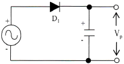
- 정류파형의 주파수가 높을수록 맥동률은 적어진다.
- 부하저항이 클수록 맥동률은 적어진다.
- 정류파형의 주파수는 맥동률과 무관하다.
- 캐패시터 용량값이 클수록 맥동률은 적어진다.
(정답률: 63%)
3. 다음 중 정류회로를 평가하는 파라미터에 해당되지 않는 것은?
- 최대역전압
- 궤환율
- 전압변동률
- 정류효율
(정답률: 63%)
4. 다음 중 증폭기에 대한 설명으로 옳은 것은?
- 교류성분을 직류성분으로 변환하기 위한 전기 회로다.
- 다이오드를 사용하여 교류 전압원의 (+) 는 (-)의 반 사이클을 정류하고, 부하에 직류 전압을 흘리도록 한다.
- 교류(AC)를 직류(DC)로 바꾸는 여러 과정 가운데 맥류를 완전한 직류로 바꾸어 준다.
- 입력의 신호변화 형상이 출력단에 확대되어 복사시킨다.
(정답률: 80%)
5. 다음 증폭기 호로에서 β=200인 경우 컬렉터 전류 IC는 얼마인가?
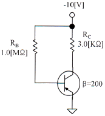
- 1.25[mA]
- 2.00[mA]
- 10.1[mA]
- 1.86[mA]
(정답률: 61%)
6. 다음 중 트랜지스터 증폭 특성에 대한 설명으로 틀린 것은?
- 공통 베이스 회로의 입력 임피던스는 작고 출력 임피던스는 크다.
- 공통 베이스 회로의 전류 이득과 공통 컬렉터 회로의 전압 이득은 모두 1보다 크다.
- 공통 컬렉터 회로의 입력 임피던스는 크고 출력 임피던스는 작아 임피던스 매칭 회로로 사용된다.
- 증폭 회로의 입출력 위상관계는 공통 베이스 및 컬렉터 회로의 경우 동일 위상이고 공통 이미터의 경우 반전된 위상이다.
(정답률: 73%)
7. 잡음지수가 3[dB]이고 증폭도가 20[dB]인 전치 증폭기를 잡음지수가 5[dB]인 종속 증폭기에 연결하면 종합잡음지수는 얼마가 되는가?
- 3[dB]
- 3.2[dB]
- 5[dB]
- 5.2[dB]
(정답률: 79%)
8. 외부로부터의 전기적인 신호가 없어도 회로 내에서 전기진동을 발생하는 회로를 무엇이라 하는가?
- 발진회로
- 변조회로
- 정류회로
- 전원회로
(정답률: 86%)
9. 발진회로에서 발진을 지속하기 위해 필요한 과정은?
- 출력신호의 일부분을 부궤환시킨다.
- 출력신호의 일부분을 정궤환시킨다.
- 외부로부터 지속적으로 입력신호를 제공한다.
- L과 C 성분을 제거한다.
(정답률: 83%)
10. 다음 중 변조과정에 대한 설명으로 옳은 것은?
- 반송파에 정보신호(음성ㆍ화상ㆍ데이터 등)를 싣는 것을 변조라 한다.
- 변조된 높은 주파수의 파를 반송파라 한다.
- 변조는 소신호로 대전류를 제어하는 것이다.
- 저주파는 음성 신호파를 운반하는 역할을 하므로 피변조파라 한다.
(정답률: 86%)
11. FM에서 최대 주파수편이가 60[kHz]이고 최대 변조주파수가 6[kHz]라 하면 변조도는 얼마인가? (단, 변조지수는 8이다.)
- 6[%]
- 60[%]
- 80[%]
- 120[%]
(정답률: 74%)
12. 트랜지스터의 스위칭 시간으로 Turn-on 시간은?
- 하강시간
- 하강시간+축적시간
- 축적시간
- 상승시간+지연시간
(정답률: 84%)
13. 다음 그림은 이상적인 펄스를 나타낸 것이다. 펄스의 듀티 싸이클(Duty Cycle) D의 식으로 맞는 것은?
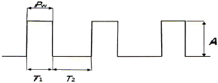
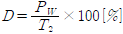
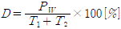
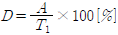
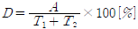
(정답률: 84%)
14. 0과 1의 조합에 의하여 어떤한 기호라도 표현될 수 있도록 부호화를 행하는 회로를 무엇이라 하는가?
- Decoder
- Detector
- Encoder
- Comparator
(정답률: 73%)
15. 310을 Gray Code로 변환하면?
- 0010
- 0001
- 0100
- 0110
(정답률: 78%)
16. 다음 그림과 같은 논리회로 출력의 값과 그 기능은?
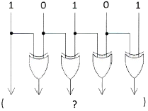
- 11011, 패리티 점검
- 11000, 양수/음수 점검
- 11111, 코드 변환
- 100000, 패리티 변환
(정답률: 84%)
17. 디지털 논리 소자에서 회로 동작을 손상시키지 않으면서 출력에 연결할 수 있는 동일한 논리 게이트의 수를 무엇이라고 하는가?
- Settling
- Fan-Out
- Hold
- Setup
(정답률: 79%)
18. 카운터(Counter)를 이용하여 컨베이어 벨트를 통과하는 생산품의 개수를 파악하려고 한다. 최대 500개의 생산품을 카운트하기 위한 카운트를 플립플롭을 이용 제작할 때 최소한 몇 개의 플립플롭이 필요한가?
- 5
- 7
- 9
- 11
(정답률: 87%)
19. 다음 중 환형 계수기(Ring Counter)와 같은 기능을 갖는 것은?
- BCD 계수기
- 가역 계수기
- 시프트 레지스터
- 순환 시프트 레지스터
(정답률: 76%)
20. 기억된 내용을 자외선을 비추어 소거시키는 ROM은?
- EPROM
- EAROM
- MASK ROM
- EEPROM
(정답률: 85%)
2과목: 무선통신 기기
21. 다음 중 수신기의 성능 지수의 선택도를 나타내는 주파수 특성에서 얻을 수 없는 것은?
- 대역폭
- 옥타브 감쇄 경도
- 평균 감쇄 경도
- 스퓨리어스 응답
(정답률: 80%)
22. 다음 중 FM 수신기에 대한 설명으로 틀린 것은?
- 점유주파수 대역폭이 AM 방식보다 넓다.
- 잡음에 의한 찌그러짐이 AM 방식보다 많다.
- 신호대 잡음비가 AM 방식에 비해 양호하다.
- 진폭 제한기에 의해 진폭성분의 잡음을 감소시킬 수 있다.
(정답률: 88%)
23. FSK 신호의 전송속도가 1,200[bps]이면 보(baud) 속도는 얼마인가?
- 300[baud]
- 400[baud]
- 600[baud]
- 1,200[baud]
(정답률: 85%)
24. 심볼간격이 T인 펄스신호를 Nyquist 기저대역(baseband) 채널을 통해 전송하고자 한다. 이 때 요구되는 기저대역 채널대역폭은?
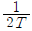
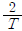
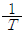
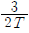
(정답률: 80%)
25. 위성 통신에 사용되는 주파수 대역 중 12.5~18[GHz]를 무엇이라고 하는가?
- C
- Ku
- Ka
- X
(정답률: 89%)
26. 다음 중 단측파대(SSB) 송수신기의 설명으로 틀린 것은?
- 송신기가 소형이고 무게가 가볍다.
- 적은 송신전력으로 통신이 가능하다.
- 송수신기의 회로구성이 단순하다.
- 점유주파수대역폭이 1/2로 축소된다.
(정답률: 79%)
27. 다음 중 OFDM에 대한 설명으로 틀린 것은?
- 다수 반송파 시스템으로서 반송파 사이에 직교성이 보장되도록 한다.
- 주파수 선택성 페이딩이나 협대역 간섭에 강인하게 사용할 수 있다.
- 송수신 에서 복수의 반송파를 변복조하기 위해 IFFT/FFT를 사용할 수 있으므로 간단한 구조로 고속 구현이 가능하다.
- 부반송파들을 분리하기 위해 보호대역이 필요하다.
(정답률: 85%)
28. 다음 중 정보에 따라 주파수를 변환시키는 디지털 변조 방식은?
- ASK
- FSK
- PSK
- QAM
(정답률: 89%)
29. 통신위성이나 방송위성의 중계기(트랜스폰더)에 사용되는 중계방식은?
- 헤테로다인 중계방식
- 재생 중계방식
- 무급전 중계방식
- 직접 중계방식
(정답률: 64%)
30. 다음 중 레이더 기술에 대한 설명으로 틀린 것은?
- 야간이나 시계가 불량한 경우 레이더를 사용하면 안전한 항해를 할 수 있다.
- 거리와 방위를 구할 수 있으므로 목표물의 위치 및 상대속도 등을 구할 수 있다.
- 특수레이더의 경우 강렬한 열대성 폭풍(태풍)의 위치와 강우의 이동 등 다양한 용도로 사용할 수 있다.
- 기상조건에 영향을 많이 받으므로 주로 가시거리 내에서 사용된다.
(정답률: 93%)
31. 다음 중 UPS의 구성 방식에 대한 설명으로 틀린 것은?
- ON-LINE 방식 : 상용전원을 컨버터회로에 의해 직류로 바꾸고 이를 축전지에 충전하고 인버터 회로를 통해 교류전원으로 바꾼다.
- Hybrid 방식 : 상용전원은 그대로 출력으로 내보내며 축전지는 충전회로를 통해 충전한다.
- LINE 인터랙티브 방식 : 축전지와 인버터 부분이 항상 접속되어 서로 전력을 변환하고 있다.
- OFF-LINE 방식 : 입력측의 변동된 전원이 부하측의 출력으로 공급되어 출력에 영향을 줄수 있다.
(정답률: 90%)
32. 다음 중 정류회로의 종류가 아닌 것은?
- 반파 정류회로
- 전파 정류회로
- 평활회로
- 배전압 정류회로
(정답률: 85%)
33. 다음 중 축전지에 대한 설명으로 틀린 것은?
- 축전지는 한번 충전하여 반영구적으로 사용하는 전지이다.
- 1차 전지는 한번 사용하면 다시 사용할 수 없는 전지이다.
- 2차 전지는 충전과 방전을 몇 번이고 반복하여 계속 사용할 수 있는 전지이다.
- 축전지의 종류에는 납 축전지와 알칼리 축전지 등이 있다.
(정답률: 84%)
34. 제어부의 연결 형태에 따른 정전압 회로의 종류에 해당되지 않는 것은?
- 제너 다이오드형
- 가변용량 콘덴서형
- 병렬 제어형
- 직렬 제어형
(정답률: 83%)
35. 전지의 내부저항을 측정하기 위해 전압계와 전류계를 사용하는 경우 전압계와 전류계의 내부저항은 전지의 내부저항에 비해 어떻게 되어야 하는가?
- 전압계의 내부저항은 아주 작고 전류계의 내부저항은 아주 커야 한다.
- 전압계의 내부저항은 아주 크고 전류계의 내부저항은 아주 작아야 한다.
- 전압계의 내부저항과 전류계의 내부저항은 아주 커야 한다.
- 전압계의 내부저항과 전류계의 내부저항은 아주 작아야 한다.
(정답률: 78%)
36. 다음 중 송신기의 변조특성을 나타내는 요소가 아닌 것은?
- 변조의 직선성
- 공중선 전력
- 종합왜율
- 신호대 잡음비
(정답률: 62%)
37. 전력 변환장치인 인버터(Inverter)의 기능을 바르게 나타낸 것은?
- DC를 DC로 변환하는 장치이다.
- DC를 AC로 변환하는 장치이다.
- AC를 DC로 변환하는 장치이다.
- AC를 AC로 변환하는 장치이다.
(정답률: 83%)
38. 송신전력 10[W]는 몇 [dBm]인가? (단, 송신전력이 1[mW]일 때 0[dBm]이다.)
- 40[dBm]
- 60[dBm]
- 80[dBm]
- 100[dBm]
(정답률: 75%)
39. 무손실 선로에서의 특성 임피던스를 바르게 나타낸 것은?
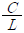
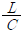
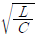
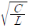
(정답률: 85%)
40. 어떤 동축 케이블의 종단 개방시 입력 임피던스가 30[Ω]이고 종단 단락시 입력 임피던스가 187.5[Ω]일 때, 이 동축 케이블의 특성 임피던스는 몇 [Ω]인가?
- 50[Ω]
- 65[Ω]
- 75[Ω]
- 80[Ω]
(정답률: 86%)
3과목: 안테나 공학
41. 다음 중 전파에 관한 설명으로 맞는 것은?
- 진행 방향에는 전계와 자계가 없고 직각인 방향에만 전계와 자계 성분이 있는 경우를 구면파라고 한다.
- 매질의 종류에 관계없이 속도는 광속과 같다.
- 전파는 종파이다.
- 군속도×위상속도 = (광속도)2
(정답률: 85%)
42. 비유전율(εs)이 1이고 비투자율(μs)이 9인 매질 내를 전파하는 전자파의 속도는 자유공간을 전파할 때와 비교해서 몇 배의 속도가 되는가?
- 2배
- 1/2배
- 3배
- 1/3배
(정답률: 90%)
43. 다음 중 포인팅 벡터의 크기를 나타내는 것은? (단, E : 전계의 세기, H : 자계의 세기, μ : 투자율, ε : 유전율)
- EH
- με
- H/B
- √με
(정답률: 90%)
44. 다음 중 스미스 차트에 대한 설명으로 틀린 것은?
- 스미스 차트상의 용량성, 유도성 리액턴스 값은 표시할 수 있지만 저항성 임피던스는 표시할 수 없다.
- 전송선로 상의 한 점에서의 임피던스를 알면 스미스 차트를 이용하여 임의의 지점에서의 선로 임피던스를 계산할 수 있다.
- 스미스 차트의 정 중앙은 순수한 저항성 임피던스 값을 나타낸다.
- 스미스 차트상의한 점에 의해 반사계수와 임피던스 값을 확인할 수 있다.
(정답률: 77%)
45. 다음 중 진행파와 반사파가 모두 존재하는 경우는?
- 무한장 급전선
- 정재파비가 1인 급전선
- 정규화 부하 임피던스가 1인 급전선
- 반사계수가 1인 급전선
(정답률: 79%)
46. 다음 중 급전선에 관한 설명으로 틀린 것은?
- 사용 주파수에 따라 무손실 급전선의 특성 임피던스는 달라진다.
- 급전선의 길이가 길면 손실도 커진다.
- 도선의 굵기와 간격의 비율이 같으면 임피던스도 같다.
- 급전선에서의 손실은 √F 에 비례하여 커진다.
(정답률: 42%)
47. 다음 중 비동조 급전선에 관한 설명으로 틀린 것은?
- 비동조급전선의 예로는 도파관, 동축케이블 등이다.
- 송신부와 안테나의 거리가 가까울 때 사용한다.
- 급전선상에 진행파만 존재하도록 정합장치가 필요하다.
- 동조급전선에 비해 효율이 양호하고 외부방해가 없다.
(정답률: 68%)
48. 다음 중 임피던스 정합회로가 아닌 것은?
- 테이퍼 선로
- Y형 정합
- T형 정합
- 슈페르토프(Sperrtopf)
(정답률: 78%)
49. 다음 중 안테나정수에 해당되지 않는 것은?
- 지향성
- 복사저항
- 복사전압
- 이득
(정답률: 66%)
50. 다음 로딩(Loading) 다이폴안테나의 설명으로 괄호 안에 맞는 말을 순서대로 배열한 것은?
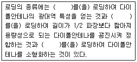
- 저항 - 인덕터 - 커패시터
- 인덕터 - 커패시터 - 저항
- 커패시터 - 저항 - 인덕터
- 커패시터 - 인덕터 - 저항
(정답률: 86%)
51. 등방성안테나를 기준 안테나로 하는 이득은?
- 절대이득
- 상대이득
- 지상이득
- 최대이득
(정답률: 87%)
52. 길이 30[m]인 수직 공중선의 고유파장과 고유주파수는 얼마인가?
- λ: 120[m], f: 2,500[MHz]
- λ: 80[m], f: 3,750[MHz]
- λ: 120[m], f: 2,500[kHz]
- λ: 80[m], f: 3,750[kHz]
(정답률: 77%)
53. 다음 중 Friis의 전달공식을 바르게 표현한 것은? (단, Pt: 송신전력, Pr: 수신전력, Gt: 송신안테나의 이득, Gr: 수신안테나의 이득, Ls: 자유공간손실이다.
- Pr[dB]= Pt[dB]+Gt[dB]+Gr[dB]-Ls[dB]
- Pr[dB]= Pt[dB]-Gt[dB]-Gr[dB]-Ls[dB]
- Pr[dB]= Pt[dB]+Gt[dB]-Gr[dB]-Ls[dB]
- Pr[dB]= Pt[dB]-Gt[dB]+Gr[dB]-Ls[dB]
(정답률: 82%)
54. 다음 중 Loop 안테나의 설명으로 틀린 것은?
- 급전선과 정합이 어렵다.
- 효율이 나쁘다.
- 수평면내 8자형 지향특성을 갖는다.
- 대형으로 이동이 어렵다.
(정답률: 67%)
55. 다음 중 지상파에 대한 설명으로 틀린 것은?
- 수평 및 수직편파에 따라 대지 반사계수가 달라진다.
- 안테나가 충분히 높으면 직접파와 대지 반사파의 합성파가 지표파보다 크다.
- 장파 또는 중파대 이하 지상파에서는 지표파가 주요 전파로 사용된다.
- 지표파는 대지 도전율이 작을수록 감쇠가 적다.
(정답률: 77%)
56. 다음 중 대류권 산란파에 대한 설명으로 틀린 것은?
- 전파 경로상의 지형에 대한 영향을 적게 받는다.
- 공간 다이버시티를 이용하면 대류권 산란에 의한 페이딩을 방지할 수 있다.
- 짧은 주기를 갖는 페이딩이 발생한다.
- 전파손실이 자유공간 손실보다 작은 값을 갖는다.
(정답률: 61%)
57. 다음 중 전리층에 대한 설명으로 틀린 것은?
- D층은 야간에 장파대의 전파를 반사시킬 수 있다.
- E층은 주간에 약 10[MHz]의 단파를 반사시킬 수 있다.
- F층은 단파대의 전파를 반사시킬 수 있다.
- Es층은 80[MHz] 정도의 초단파를 반사시킬 수 있다.
(정답률: 76%)
58. 다음 중 전리층 전파에 관한 제1종 감쇠와 제2종 감쇠의 설명으로 틀린 것은?
- 제1종 감쇠는 전파가 전리층(D층 및 E층)을 통과할 때 받는 감쇠이다.
- 제1종 감쇠의 감쇠량은 주파수의 제곱에 비례한다.
- 제2종 감쇠는 전파가 전리층(E층 및 F층)에서 반사할 때 받는 감쇠이다.
- 제2종 감쇠의 감쇠량은 주파수가 높아질수록 커진다.
(정답률: 70%)
59. 중파 방송국의 안테나 전력을 10[kW]에서 40[kW]로 증가시키면 동일 지점의 전계강도는 몇 배로 되는가?
- 변화가 없다.
- √2 배 증가한다.
- 2배 증가한다.
- 4배 증가한다.
(정답률: 75%)
60. 전리층의 높이가 지상 약 100[km] 정도이며 발생지역과 장소가 불규칙한 전리층은?
- E층
- Es층
- F1층
- F2층
(정답률: 83%)
4과목: 무선통신 시스템
61. 이득 40[dB]의 저주파 증폭기가 10[%]의 찌그러짐율을 가지고 있을 때 이를 1[%] 이내로 하기 위해 필요한 조치는?
- 20[dB]의 정궤환을 걸어 준다.
- 전압변동률을 10[%]로 조절한다.
- 40[dB]의 이득을 낮춘다.
- 20[dB]의 부궤환을 걸어 준다.
(정답률: 69%)
62. 다음 중 무선통신 시스템에 가장 영향을 미치는 요소는?
- 변조방식
- 회선용량
- 설치비용
- 외부잡음
(정답률: 76%)
63. 다단 증폭시스템에서 종합 잡음지수를 가장 효과적으로 개선할 수 있는 시스템 구성요소로 적합한 것은?
- 전치 증폭기
- 자동 이득 조절기
- 대역 통과 필터
- 검파기
(정답률: 76%)
64. 무선 수신기의 특성 중 변조 내용을 수신기의 출력 측에서 어느 정도 재현할 수 있는가의 능력을 나타내는 것은?
- 충실도(Fidelity)
- 안정도(Stability)
- 선택도(Selectivity)
- 감도(Sensitivity)
(정답률: 84%)
65. 다음 중 IS-95 CDMA 기술을 사용하는 이동전화 시스템에 대한 설명으로 틀린 것은?
- 확산코드로 사용하는 Walsh 코드는 코드간 직교성을 갖는다.
- 레이크 수신기의 사용으로 페이딩에 대한 영향을 줄일 수 있다.
- 주파수 도약 방식으로 인해 암호화 기능이 있어 감청이 쉽지 않다.
- 전력 제어를 통해 셀 내의 사용로부터 기지국에 수신되는 신호 강도를 균일하게 유지한다.
(정답률: 61%)
66. 인공위성 통신망을 이용하여 가장 넓은 지역을 커버하는 광대역 서비스는?
- Mega Cell
- Macro Cell
- Micro Cell
- Pico Cell
(정답률: 89%)
67. 다음 중 CDMA 시스템 용량에 대한 설명으로 틀린 것은?
- 동시 사용자수는 시스템 처리 이득에 비례한다.
- 적절한 품질을 유지하기 위한 통신로의 Eb/No 기준값이 증가할수록 시스템 용량은 증가한다.
- 인접 셀의 사용자의 부하를 줄일수록 시스템 용량은 증가한다.
- 음성활성화 계수가 작을수록 시스템 용량은 증가한다.
(정답률: 80%)
68. 다음 중 PN(Pseudo-Noise) 코드의 특성이 아닌 것은?
- 평형(Balance) 특성
- 런(Run) 특성
- 천이(Shift) 특성
- 최소길이(Minimal length) 특성
(정답률: 73%)
69. 다음 중 대역확산을 사용하는 다중화 기법은?
- FDMA
- TDMA
- CDMA
- SDMA
(정답률: 75%)
70. 다음 중 WCDMA의 USIM에 대한 설명으로 틀린 것은?
- 가입자 인증 기능
- 고정사용번호 서비스
- ESN(Electronic Serial Number) 내장
- 개인 고유번호 서비스
(정답률: 72%)
71. 다음 중 CDMA 이동전화 시스템의 전력제어 종류가 아닌 것은?
- 폐루프 전력제어
- 순방향 전력제어
- 외부루프 전력제어
- 기지국 통화 셀 전력제어
(정답률: 65%)
72. 다음 중 프로토콜의 주요 요소가 아닌 것은?
- 개체(Entity)
- 구문(Syntax)
- 의미(Semantics)
- 타이밍(Timing)
(정답률: 78%)
73. 다음 중 통신망 구조를 나타낼 때 통신망의 기능들을 계층으로 나누는 이유가 아닌 것은?
- 각 계층들이 모듈러 구조로 정의되어 호환성이 잘 유지될 수 있다.
- 상위 계층 기능을 하위 계층의 기능이 지원하는 경우를 잘 나타낼 수 있다.
- 상위 계층의 정보가 하위 계층에서는 내용으로 전달되는 경우를 잘 나타낼 수 있다.
- 상위 계층일수록 더욱 물리적이고 실제의 정보 전달 기능을 제시할 수 있다.
(정답률: 82%)
74. 기지국 장치로부터의 RF신호 입력을 Slave장치로 공급하기 위해 RF신호를 분기하는 유니트는 어느 것인가?
- COME(Combiner : 결합기)
- SPLT(Splitter : 분배기)
- NMS(Network Management System : 망 관리 시스템)
- Duplex(방향성 결합기)
(정답률: 84%)
75. OSI 참조 모델의 각 계층과 그에 해당하는 역할을 잘못 짝지은 것은?
- 물리계층 - 안테나의 모양 규정
- 링크계층 - 데이터 링크 오류 제어
- 네트워크계층 - 네트워크 구성 정보 전달
- 응용계층 - 사용자 인터페이스 규정
(정답률: 80%)
76. 우리나라의 LTE 이동통신시스템에서 한정된 주파수 자원을 주어진 시간에 여러 사용자들에 할당하여 기지국과 단말기간의 무선 구간을 연결하는 다중접속방식으로 사용되는 것은 무엇인가?
- FDMA
- TDMA
- CDMA
- OFDMA
(정답률: 75%)
77. 다음 중 무선망 최적화 수행사항이 아닌 것은?
- 커버리지 확보
- 절단율 개선
- 기지국 용량 증대
- 통화량 균등 분배
(정답률: 67%)
78. 스퓨리어스 방사의 종류 중에서 전도성이 의미하는 것은?
- 기지국의 RF 출력단에서 측정한 것
- RF 출력단을 종단시키고 전자파 무반사실 내에서 측정한 것
- 단말기의 RF 입력단에 측정한 것
- RF 출력단을 종단시키고 전자파 반사실 내에서 측정한 것
(정답률: 67%)
79. FM 수신기에서 반송파가 없으면 잡음이 증가하는데, 이때 잡음 전압을 이용하여 저주파 증폭기의 동작을 정지시켜 출력을 차단하는 회로를 무엇이라 하는가?
- 스켈치 회로
- 프리 엠퍼시스 회로
- 디 엠퍼시스 회로
- 주파수 변별기
(정답률: 77%)
80. 다음 중 위성통신회선의 다원 접속방식이 아닌 것은?
- WDMA
- FDMA
- TDMA
- CDMA
(정답률: 84%)
5과목: 전자계산기 일반 및 무선설비기준
81. 다음 프로세스간 통신에 있어서 직접통신과 관련이 없는 사항은?
- 각 쌍의 프로세스에 대해서 정확히 하나의 통로만 존재한다.
- 한 통로는 두 개 이상의 프로세스와 연관될 수 있다.
- 프로세스들이 서로 통신을 하기 위해서는 상대방의 이름만 알면 된다.
- 통로는 보통 단일 방향이거나 양쪽 방향일 수 있다.
(정답률: 61%)
82. 다음 중 인터넷 응용에 적합한 객체지향 언어는?
- Fortran
- Ada
- Java
- Lisp
(정답률: 90%)
83. 제어장치를 마이크로프로그래밍(Microprogramming)으로구현하였을 때 하드와이어(Hardwired) 제어장치에 비하여 장점이 되지 않는 것은?
- 제어 속도가 빠르다.
- 제어 장치의 설계를 단순화할 수 있다.
- 오류 발생률이 낮다.
- 구현 비용이 적게 든다.
(정답률: 64%)
84. 다음 중 I/O 채널(Channel)에 대한 설명으로 틀린 것은?
- CPU는 일련의 I/O 동작을 지시하고 그 동작 전체가 완료된 시점에서만 인터럽트를 받는다.
- 입출력 동작을 위한 명령문 세트를 가진 프로세서를 포함하고 있다.
- 선택기 채널(Selector Channel)은 여러 개의 고속 장치들을 제어한다.
- 멀티플렉서 채널(Multiplexer Channel)은 복수개의 입ㆍ출력 장치를 동시에 제어할 수 없다.
(정답률: 77%)
85. 다음 진수 표현 중 가장 큰 수는?
- FF(16)
- 257(10)
- 11111111(2)
- 377(8)
(정답률: 75%)
86. 최근 운영체제들은 다양한 기능과 사용자의 편의성을 개선한 GUI가 개발되고 있으며 컴퓨터 시스템의 운영에 필요한 자원관리기능을 향상시키기 위한 연구도 진행되고 있다. 이와 같은 운영체제의 자원관리기능에 속하지 않는 것은?
- 메모리
- 컴파일러
- 주변장치
- 데이터
(정답률: 59%)
87. 다음 중 컴퓨터에서 수를 표현하는 방식이 아닌 것은?
- 양자화 표현
- 1의 보수 표현
- 2의 보수 표현
- 부호화 - 절대치 표현
(정답률: 82%)
88. 10진수 56789에 대한 BCD 코드(Binary Coded Decimal)는 어느 것인가?
- 0101 0110 0111 1000 1001
- 0011 0110 0111 1000 1001
- 0111 0110 0111 1000 1001
- 1001 0110 0111 1000 1001
(정답률: 80%)
89. 다음 운영체제에 대한 설명으로 틀린 것은?
- 시스템을 관리하고 제어하는 기능을 가진다.
- 윈도우나 유닉스는 명령어 실행과 수행방법이 같다.
- 대표적인 운영체제는 윈도우 XP, 윈도우 7, 리눅스 등이 있다.
- 컴퓨터와 사용자 간에 중재적인 역할을 한다.
(정답률: 80%)
90. 마이크로프로세서를 구성하는 요소 장치로 데이터 처리과정에서 필수적으로 요구되는 것끼리 올바르게 짝지어진 것은?
- 제어장치, 저장장치
- 연산장치, 제어장치
- 저장장치, 산술장치
- 논리장치, 산술장치
(정답률: 87%)
91. 다음 중 변경허가를 받아야 할 사항이 아닌 것은?
- 무선설비의 설치장소 변경
- 공중선전력 변경
- 공중선의 형식ㆍ구성 및 이득 변경
- 무선국의 폐지
(정답률: 80%)
92. 156[MHz]~174[MHz] 주파수대를 사용하는 선박국 및 생존정의 송신설비의 주파수 허용편차는 백만분의 얼마인가?
- 10
- 30
- 50
- 100
(정답률: 74%)
93. 다음 중 특정한 주파수의 용도를 정하는 것으로 정의되는 것은?
- 주파수분배
- 주파수할당
- 주파수지정
- 주파수재배치
(정답률: 62%)
94. 다음의 통신 보안 방법 중에서 보안도가 가장 높은 것은 어느 것인가?
- 약어
- 암호
- 음어
- 약호
(정답률: 85%)
95. 다음 중 무선국 시설자 등이 준수하여야 할 통신보안에 관한 사항으로 틀린 것은?
- 통신보안교육 등에 관한 사항
- 통신보안책임자의 지정에 관한 사항
- 통신시 기록할 통신내용에 관한 사항
- 무선국 허가시 통신보안 조치에 관한 사항
(정답률: 75%)
96. 다음 중 방송통신기자재 지정시험기관이 발행한 시험성적서의 기재사항이 아닌 것은?
- 시험신청인의 성명 및 주소
- 성적서 발급번호 및 페이지 일련번호
- 시험결과에 대한 담당 시험원의 의견
- 품질책임자의 의견 및 서명
(정답률: 74%)
97. 무선종사자가 2차 이상 통신보안교육을 받지 않거나 통신보안사항을 준수하지 아니한 경우벌칙은?
- 3개월 이내의 업무정지
- 6개월 이내의 업무정지
- 1년 이내의 업무정지
- 2년 이내의 업무정지
(정답률: 66%)
98. 무선설비규칙에서 정의한 ‘불요발사’로서 적합한 것은?
- 대역외 발사 및 스퓨리어스 발사
- 대역내 발사
- 필요주파수대폭의 바로 안쪽 발사 에너지
- 스퓨리어스 발사 및 저감반송파
(정답률: 86%)
99. 수신설비가 충족하여야 하는 조건이 아닌 것은?
- 수신주파수의 운용범위 이내일 것
- 내부잡음이 적을 것
- 감도는 높은 신호입력에서도 양호할 것
- 선택도가 크고 명료도가 충분할 것
(정답률: 65%)
100. 필요주파수대 바깥쪽에 위치한 하나 이상의 주파수에서 발생하는 발사로서 정보전송에 영향을 미치지 아니하고 그 강도를 저감시킬 수 있는 것으로 고조파발사, 기생발사, 상호변조 및 주파수 변환 등에 의한 발사를 무엇이라 하는가?
- 스퓨리어스 발사
- 대역외 발사
- 점유주파수 발사
- 혼변조 발사
(정답률: 77%)